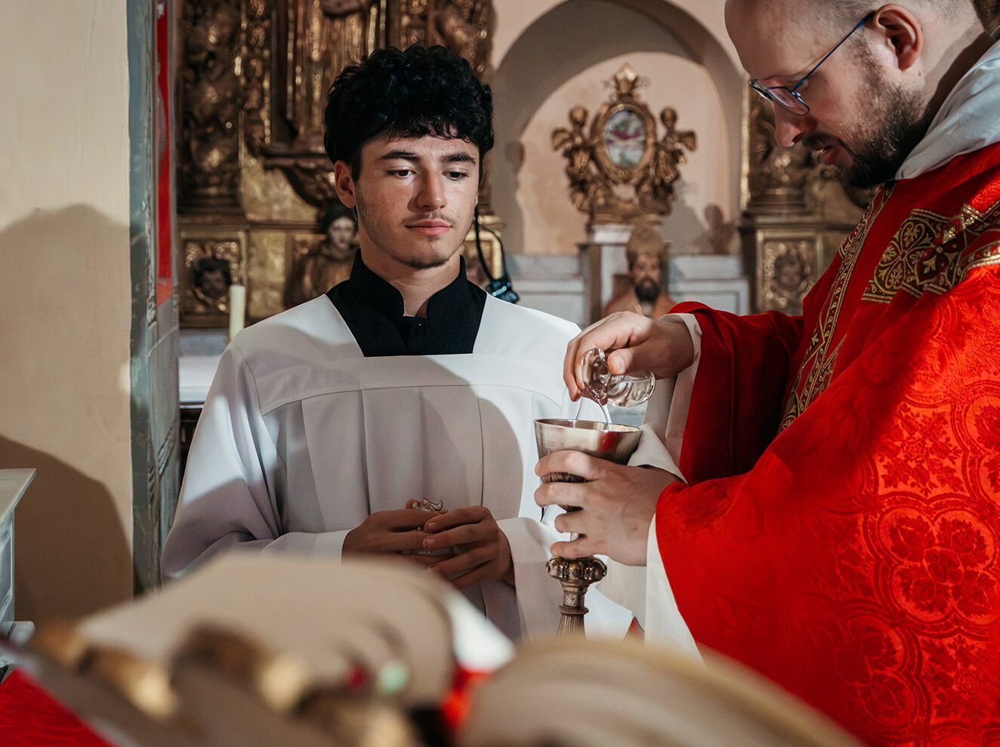
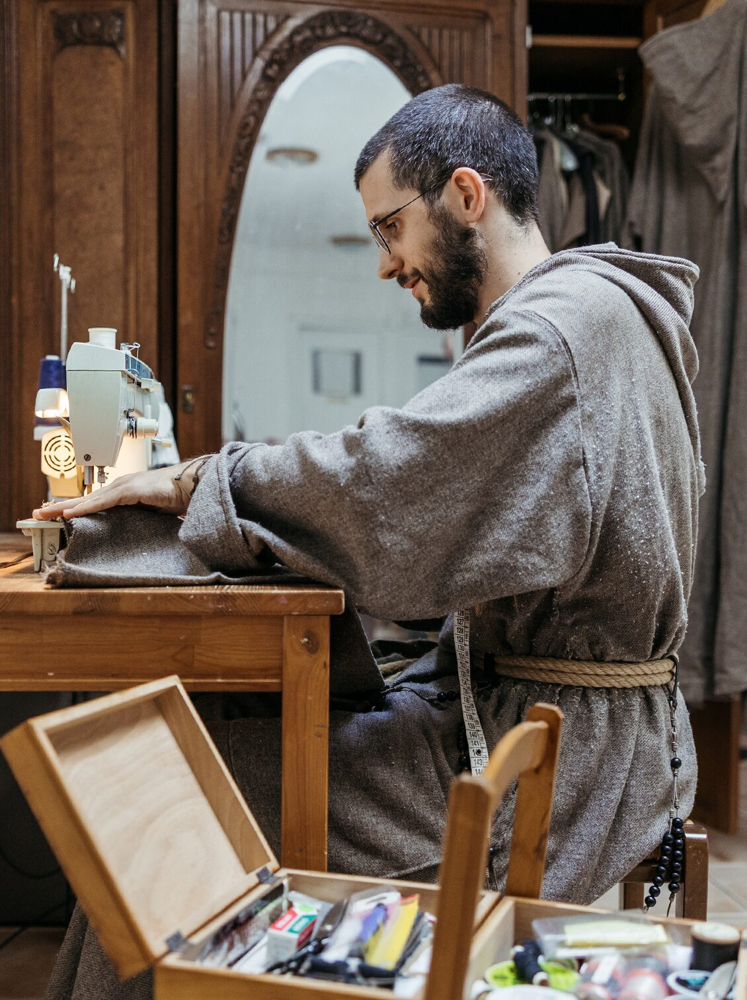
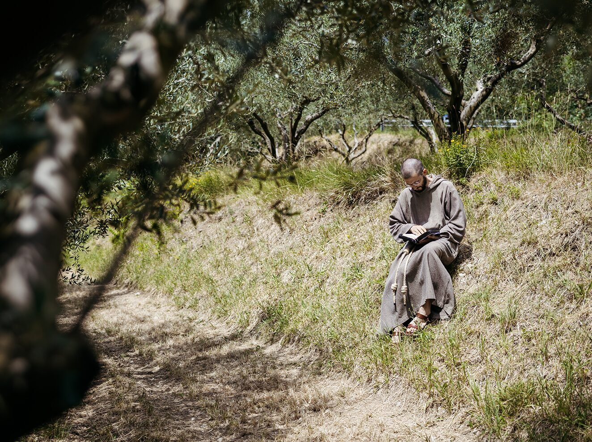

Sostieni
Donazioni
Come donare
È possibile sostenere i frati con una donazione tramite bonifico bancario intestato a:
Association Saint François d'Assise ASFDA
IBAN: FR76 1910 6000 1043 6882 5782 549
BIC: AGRIFRPP891
Causale: Donazione



Per cosa donare?
La fraternità vive della Provvidenza, che passa spesso attraverso la generosità di chi crede in questa missione. Chi dona entra a far parte della vita della comunità ed è ricordato ogni giorno nella preghiera dei frati.
Il tuo contributo va a:
- vita quotidiana della fraternità: spese della casa, utenze, mezzi per l'apostolato
- manutenzione e restauro del convento
- arredi liturgici: oggetti per il culto, paramenti
- spese dei giovani che altrimenti non riescono a partecipare a ritiri e campi scuola
Anche una piccola donazione conta: permette ai frati di continuare a offrire ritiri, formazione e presenza accanto a chi ne ha bisogno.